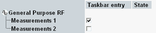
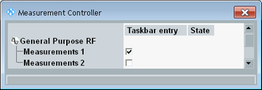

Before you can use an application, for example a measurement, you must add the application to the task bar. By default, all applications are disabled and the task bar is empty.
The following sections describe how to add applications to the task bar, depending on the used mode.
The multiple-window mode can be used if the GUI is displayed on a monitor, not on an instrument display.
In this mode, the installed and licensed applications are listed directly in the main window.
| ► | Select the applications for which you want to display an entry in the task bar.  For each selected application, a separate window is opened. To rearrange these windows, see "Organizing Multiple Windows". |
The single-window mode is used if the GUI is displayed on a built-in instrument display. It can also be used if the GUI is displayed on a monitor.
In this mode, the applications are listed in two dialog boxes. One dialog box lists applications that measure an input signal. The other dialog box lists applications that generate an output signal. Both dialog boxes are used in the same way.
Press MEASURE to open the "Measurement Controller" dialog box or SIGNAL GEN to open the "Generator/Signaling Controller" dialog box.
The dialog boxes list the installed and licensed applications.

Select the applications for which you want to display an entry in the task bar.
To close the dialog box, press MEASURE / SIGNAL GEN again or press ESC.
Alternatively, select an application at the bottom of the GUI. As a result, the dialog box closes and the main view of the selected application opens.
In single-window mode, only one application is displayed at a time. To switch between the applications, proceed as follows.
To display the task bar across the bottom of the GUI, press the TASKS key.
Alternatively, move a connected mouse to the lower border of the GUI. Wait some seconds.
Or right-click the hotkey-bar at the bottom and select "Show tasks".
Press one of the hotkeys to access the associated application.